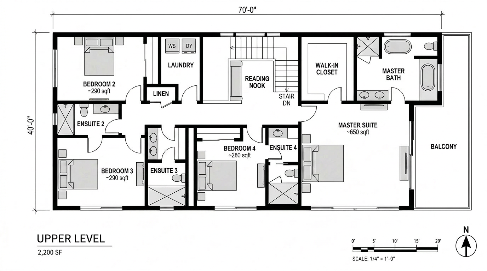

Most AI coverage in our world is still about the render. We've contributed to that, most of what we publish is downstream tool review work. But the studios that are actually clawing back time aren't doing it at the render stage. They're doing it in pre-design.
Pre-design is where briefs get tested against real sites, where zoning becomes massing, where the difference between a viable project and a dead one shows up first. It's also where most architects still work in slow, manual loops, pulling site data by hand, sketching mass studies in SketchUp, running unit-mix iterations in Excel. The AI tools that have shown up here in the last twelve months aren't gimmicks. They're starting to change which firms can compete for which kinds of work.
We spent two weeks running three of them, Rayon, Spacio, and Autodesk Forma, through the same live project: an early-stage feasibility on a 0.6-acre infill site in Philadelphia. Mixed-use envelope, R-MX zoning, sloped lot. Below is what each one is actually for, where they overlap, and where they don't.
Rayon, collaborative CAD without the friction
Rayon is a browser-based 2D CAD platform. That description undersells it. The pitch is closer to "what AutoCAD would look like if you started over in 2024 with a real-time collaborative product team and zero legacy obligations."
You open a URL. The drawing loads. Your colleague joins. You're both editing the same plan, seeing each other's cursors, leaving comments on specific elements. It feels like Figma if Figma understood polylines, layers, and dimensioned drawings. There's no install, no license server, no "who has the latest file" question.
Browser-based collaborative 2D CAD. Built for the "pre-Revit" zone, early diagrams, site plans, zoning studies, schematic floor plans. Live multi-user editing with comment threads tied to specific drawing elements. Imports DWG, exports DWG/PDF/SVG.
For our Philadelphia site, the workflow looked like this: import the City of Philadelphia GIS parcel data, drop the zoning envelope as a layer, lay the surveyor's CAD over it, and start drawing. Two of us worked on the site plan simultaneously, one detailing the curb cut and easement, the other testing parking layouts. We left comments on each other's work as questions, not redlines.
The thing Rayon gets right that nothing else does is that early site work is conversational. You're not producing a deliverable. You're testing what's possible. Tools that demand permanence at that stage slow you down.
The AI in Rayon is light. It auto-detects layer intent on imported drawings, can suggest dimensioning, and runs a "describe this drawing" feature that's useful for client comments. It won't generate a site plan from a brief. The intelligence is in the collaboration model and the speed, not in generative output.
Where it falls short: 2D only. If your pre-design needs 3D massing in the same canvas, Rayon punts to whatever 3D tool you're using and asks you to bring back results. For sites where the site plan is the deliverable, that's fine. For sites where massing has to lock with the parcel before anything else makes sense, you'll bounce between tools.
Spacio, data-driven massing from day one
Spacio is the one we hadn't used before this test. It bills itself as "data-driven massing" and what that means in practice is: you feed it a site, a program, and a set of constraints (FAR, height limit, setbacks, target unit mix, daylight requirements) and it generates massing options that satisfy all of them.
That description sounds like every parametric tool ever, and we were skeptical going in. The difference is that Spacio's intake is closer to natural language and its output is reviewable, not a black box. You can see why it placed a courtyard where it did, what constraints drove a particular floor-plate cut, and what trade-offs another option made.
AI-driven massing and unit-mix tool for early feasibility and concept work. Generates dozens of massing variants from a brief, ranks them against developer-style metrics (yield, daylight, parking ratio, embodied carbon), exports to Rhino/Revit. Built for architects working with developers who care about numbers.
We gave Spacio our site (uploaded as a closed polygon with elevation data), our zoning envelope as constraints, and a target program: 38–48 residential units with 4,500–6,000 sf of ground-floor retail. Within seven minutes it had generated 24 massing variants. Each variant came with a one-line summary, "courtyard scheme, 41 units, 0.9 parking ratio, lowest embodied carbon", and you could click into a 3D preview.
Of the 24, four were architecturally credible. Most of the rest were either too aggressive on yield (units pressed against every setback line in ways no jurisdiction will approve) or too conservative (under-using the parcel). The four good ones became the starting point for a real conversation with the developer client. We presented them in a Loom video and got back priority feedback within 24 hours.
The carbon estimate is the feature we underestimated coming in. Spacio gives a back-of-envelope embodied-carbon range for each massing option, based on assumed structural type, envelope area, and a published material database. It's not a Tally or OneClick LCA replacement, but at the feasibility stage, having any number at all is more than what most firms have. For developer clients with carbon disclosure obligations, this is increasingly billable territory.
Where it falls short: The output is opinionated. Spacio assumes the dominant constraint is yield, with carbon as a co-equal. If your client's actual dominant constraint is, say, view corridor preservation or community character, you'll have to encode that as an explicit penalty function, and that's not a UI workflow yet. Custom constraint modeling currently means an export-Rhino-and-tweak loop.
Autodesk Forma, site intelligence at the urban scale
Forma is the heavyweight. It's also the most mature of the three, having spent its earlier life as Spacemaker (acquired by Autodesk in 2020) and now sitting inside the Autodesk subscription stack alongside Revit and AutoCAD.
Forma's strength is environmental analysis. Solar, wind, noise, microclimate, at the urban scale, on real geographic data, with a level of speed that older tools (CFD packages, Ladybug/Honeybee in Grasshopper, dedicated wind tunnel simulations) simply can't match. What used to take a consultant a week now takes Forma about ten minutes.
Cloud-based site analysis and conceptual design platform. Solar, wind, noise, daylight, microclimate, and operational energy analysis at site scale. Pulls real GIS context. Exports to Revit. Strongest fit for firms already deep in the Autodesk ecosystem doing complex urban or campus-scale work.
For the Philadelphia site, Forma told us things we didn't know. The wind analysis flagged a downdraft pattern that would create an uncomfortable street-level vortex if we held the building face flush to the lot line, something we wouldn't have caught until post-occupancy. The solar study showed we had a four-month seasonal shadow on what we'd been calling the courtyard, which meant the courtyard scheme Spacio had ranked highest was actually a poor option for residents who want sunlit common space.
The mistake we made early on was treating Forma like a sketching tool. It's not. The geometry editing inside Forma is functional but slow compared to Rhino or SketchUp. Forma's value isn't where you draw, it's where you analyze. Best workflow we found: model in Rhino, push to Forma for the analytical pass, bring the heatmaps and metrics back to inform the next round of Rhino edits.
Forma is the tool that justifies the AEC Collection price by itself if you do anything urban or campus-scale. Below that scale, it's overkill, but the floor it sets for environmental rigor is now table stakes for any project asking for sustainability claims.
Where it falls short: The cost. If you're not already on the AEC Collection, Forma standalone is a real line item, and small firms working on infill or renovation work will struggle to justify it. The smaller-site analysis you can get from EnergyPlus/Ladybug for free isn't as fast or as visually clean, but it's adequate for projects under five stories.
How they fit together
| Phase | Tool | Output |
|---|---|---|
| Site capture & team alignment | Rayon | Live multi-user 2D site plan with overlays, comments |
| Programmatic massing exploration | Spacio | Ranked 3D massing variants with yield + carbon |
| Environmental + microclimate analysis | Autodesk Forma | Solar, wind, noise heatmaps on real GIS context |
| Schematic 3D refinement | Rhino / SketchUp (still) | Working geometry to push into the next phase |
| Render visualization | Veras / Rendair / Midjourney | Photoreal output for client presentation |
None of these tools replace each other. Rayon owns 2D collaboration. Spacio owns generative massing. Forma owns environmental analysis. The interesting move is treating them as a stack: pre-design begins in Rayon, gets pushed into Spacio for massing variants, gets validated in Forma against real environmental data, and only then enters Rhino for traditional design development.
For our Philadelphia site, the full pre-design pass, site capture through validated massing, took six working days for a team of two. The same work in our pre-2024 workflow would have been twelve to fourteen days, including a separate environmental consultant pass that we'd have outsourced.
Who should adopt which
If you're a small firm doing infill, renovation, and small commercial work: Rayon first. The collaboration model alone changes how you work with consultants and clients, and the cost is negligible. Spacio is worth a project trial if you have a developer client who pushes for yield analysis. Skip Forma until you're on bigger work.
If you're a mid-size firm with developer clients: all three. Spacio earns its keep on the first project where it generates a credible variant your team didn't think of. Forma earns its keep on the first project where it catches an environmental risk before it becomes a complaint. Rayon earns its keep the first time you don't have to schedule a coordination meeting because the diagrammatic work happened live.
If you're working on campus, urban, or master-plan scale: Forma is non-negotiable at this point. The environmental rigor it provides is what your sustainability consultants will assume you've already done. Pair it with Spacio for early variant generation and Rayon for collaborative drawing.
What's still missing
None of these tools handle program briefs in any depth. You give Spacio a unit-mix target; you don't give it "the developer wants a building that signals stewardship of the historic district while still hitting their pro forma." That kind of brief still lives in conversation, in slide decks, in our heads. Tools to translate qualitative brief language into encoded constraints are still primitive, most are LLM wrappers that produce confident-sounding but unreliable constraints.
Cross-tool data exchange is also still painful. Pushing a Rayon site plan into Spacio is not yet a one-click operation, there's a DWG export and a re-import. Spacio to Forma is cleaner (both speak Rhino-friendly geometry) but not seamless. We expect this to improve over the next 18 months as the category matures.
The render-tool conversation isn't going anywhere. But pre-design is where the next round of competitive pressure is going to come from, the firms that compress feasibility from weeks to days are going to win bids that the rest of us never even see. Worth getting your team trained on at least one of these now.
Tested by Vista Studios on a live Philadelphia infill feasibility. No affiliate relationship with Rayon, Spacio, or Autodesk. Pricing as of May 2026.